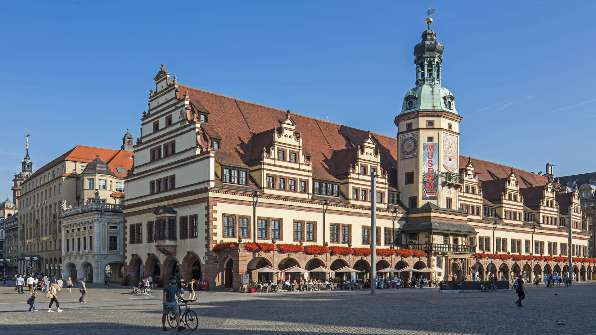
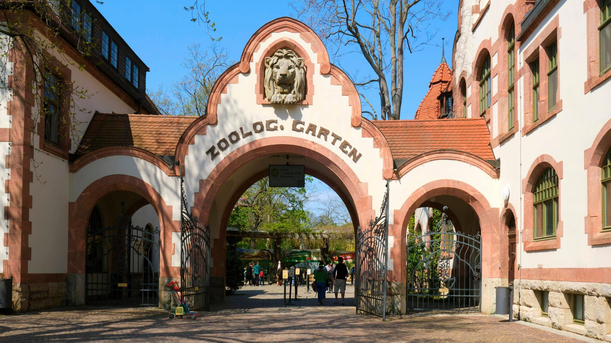
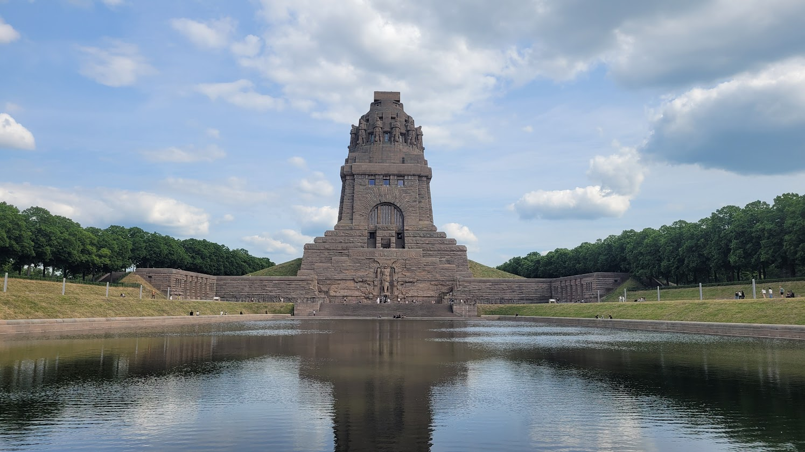

Welcome to Gut Wehlitz
General informations:
Leipzig is the most populous city in the German state of Saxony. Leipzig's population of 624,689 inhabitants as of 2022 places the city as Germany's eighth most populous, as well as the second most populous city in the area of the former East Germany after (East) Berlin. Together with Halle (Saale), the city forms the polycentric Leipzig-Halle Conurbation. Between the two cities (in Schkeuditz) lies Leipzig/Halle Airport.

The Old Town Hall

Leipzig's Old Town Hall (which dominates the east side of the marketplace in Leipzig's district Mitte) is considered one of Germany's most important secular Renaissance buildings.
The Leipzig Zoological Garden

The Leipzig Zoological Garden is a zoo in Leipzig`s district Mitte, Germany. It was first opened on June 9, 1878. It was taken over by the city of Leipzig in 1920 after World War I and now covers about 27 hectares and contains approximately 850 species.
The Monument to the Battle of the Nations

The Monument to the Battle of the Nations commemorates the defeat of Napoleon's French army at Leipzig, a crucial step towards the end of hostilities in the War of the Sixth Coalition.
❮
❯